Como usar este guia
A DuGood é a plataforma de doações onde quem doa para causas sociais ganha pontos e desbloqueia benefícios de lojas parceiras. A sua loja oferece um desconto ou brinde, aparece para uma comunidade que doa e recebe novos clientes. Este guia explica, um assunto por página, tudo o que é preciso para começar.
Na primeira vez, leia na ordem. Depois, use como consulta. O mesmo conteúdo está no vídeo tutorial que acompanha este guia.
Neste guia
- Antes de começar
- Entrar no painel
- Aceitar os Termos de Parceria
- Convidar a equipe
- O que cada pessoa vê ou edita
- O menu, a Visão geral e o idioma
- Informações da loja
- Como o doador desbloqueia
- Cadastrar um benefício
- Formas de resgate
- Validar na loja
- Clientes
- QR codes de doação
- Dúvidas frequentes
Tenha à mão
- O link de cadastro da lojaEnviado pela equipe da DuGood. É por ele que a primeira pessoa entra no painel.
- O logo e os dados da lojaLogo quadrado, uma descrição curta, contato, endereço e site.
- A ideia do benefícioUm desconto ou brinde, como será resgatado (na loja, por cupom ou pelo site) e até quando vale.
- Um celular com câmera na lojaPara ler o QR Code dos clientes, se o benefício for resgatado na loja.
Para a loja, a DuGood não custa nada
Lojas parceiras não pagam nada para estar na plataforma, e o painel é grátis. A loja só entrega o benefício que ela mesma escolheu.
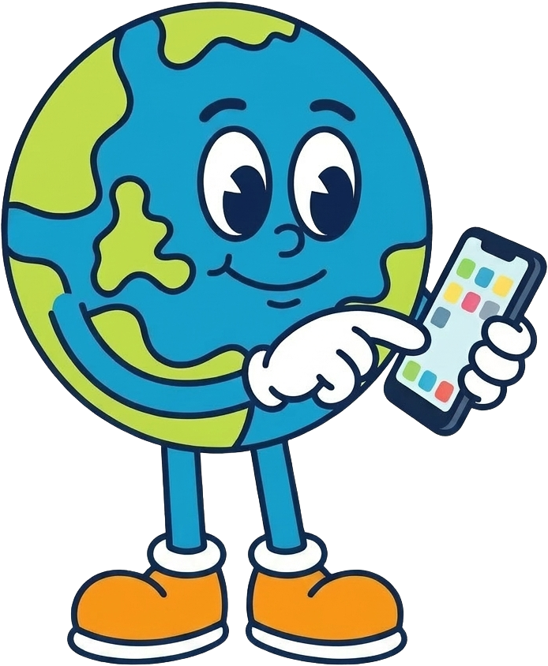
O primeiro acesso, pelo link de cadastro
A entrada no painel da loja é sempre pelo link de cadastro que a DuGood mandou. É ele que liga a sua conta ao painel da sua loja.
Passo a passo
- Abra o link de cadastro.Funciona no computador e no celular. A tela de entrada da DuGood abre.
- Entre com Google, Apple ou e-mail e senha.Se você já usa a DuGood para doar, pode usar a mesma conta.
- Sem conta? Clique em Cadastrar.Informe e-mail, telefone, CPF e uma senha. Um código chega no seu e-mail: digite-o para confirmar.
- Aceite os Termos de Parceria.Na primeira entrada, eles aparecem no próprio painel (veja a próxima página).

Quem entra primeiro vira o administrador
A primeira pessoa que entra pelo link vira o administrador do painel: tem acesso a tudo e decide quem mais entra. Quem entra depois pelo mesmo link pede acesso, e o administrador recebe um aviso por e-mail para aprovar (página 04).
Combine quem entra primeiro. O ideal é que seja quem vai cuidar dos benefícios no dia a dia. A administração pode ser passada para outra pessoa depois.
Um e-mail, um painel. Cada conta da DuGood fica ligada a um painel só. Se a pessoa já usa o e-mail no painel de uma ONG, de um organizador ou de outra loja, precisa entrar com outro e-mail.
O acordo da loja com a DuGood
Na primeira vez que entra no painel, cada pessoa vê os Termos de Parceria — Lojista DuGood. O aceite é feito no próprio painel, em poucos segundos, e só aparece uma vez para cada pessoa.
O que os termos dizem
- Uso da imagem e da marca.Você autoriza a DuGood a usar o nome, o logo e a identidade visual da loja na plataforma, em materiais de divulgação, nas redes sociais e em campanhas de impacto social. A autorização é gratuita, não exclusiva e vale enquanto a parceria estiver ativa.
- Entrega dos benefícios.A loja se compromete a entregar os benefícios cadastrados a quem tem direito, manter as informações atualizadas, ativar, pausar ou editar os benefícios quando precisar, não apresentar como ativo um benefício pausado e avisar a DuGood se não puder cumprir um benefício já oferecido.
Para aceitar
Leia o texto, marque as duas opções no fim e clique em Aceitar e continuar. O painel abre em seguida.
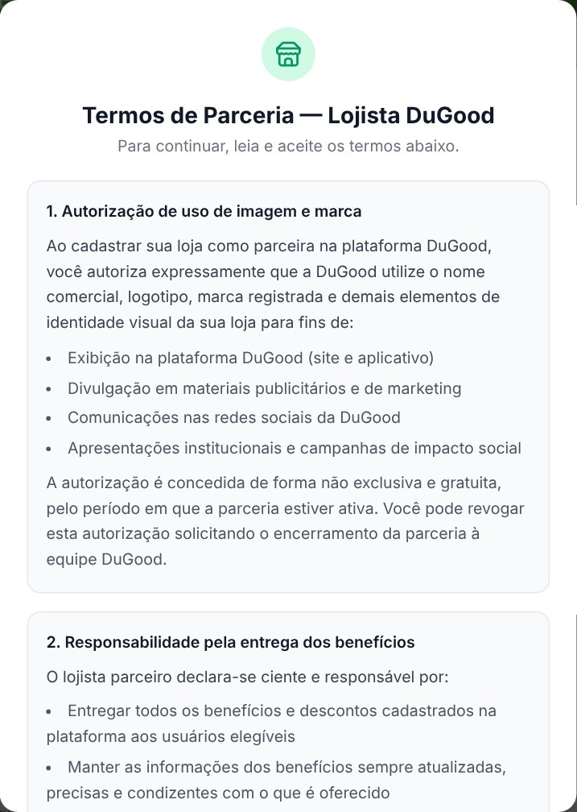
Quer encerrar a parceria? A autorização de uso da marca pode ser revogada pedindo o encerramento da parceria à equipe da DuGood.

Mais gente cuidando do painel
Cada pessoa da equipe (atendentes, gerentes, marketing) entra com a própria conta, pelo mesmo link de cadastro da loja. Assim cada um tem o seu login, e você controla quem entra e o que cada um pode fazer, sem compartilhar senha.
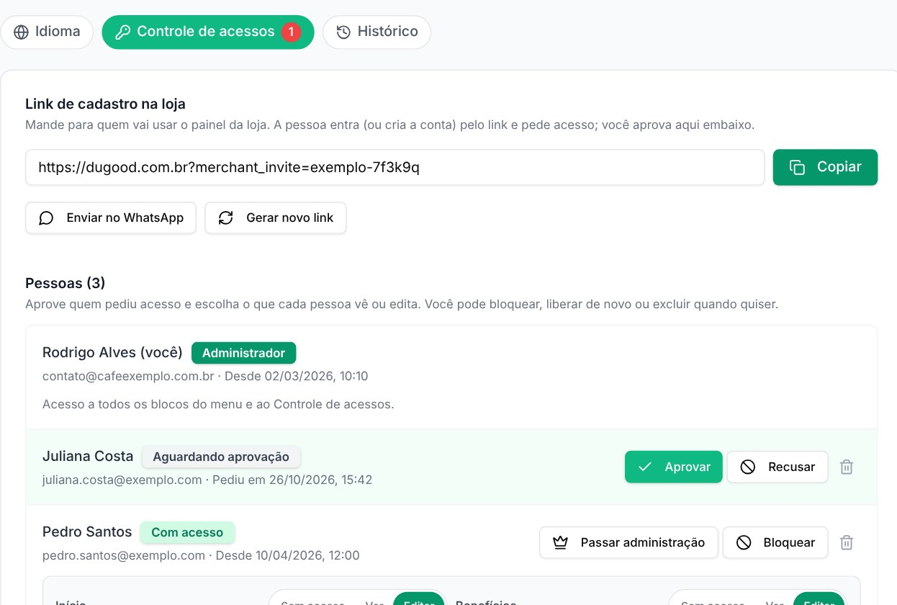
Passo a passo
- Copie o link de cadastro.Clique em Copiar e mande para a pessoa como preferir, ou use Enviar no WhatsApp.
- A pessoa entra pelo link.Ela entra com a conta dela (ou cria uma). O painel ainda não abre: fica o pedido de acesso.
- Você recebe o aviso e aprova.Chega um e-mail para o administrador, e o pedido aparece em Controle de acessos e nas Pendências da Visão geral. Clique em Aprovar ou Recusar.
- Pronto: a pessoa já pode usar o painel.Quem é aprovado começa podendo editar tudo. Para limitar, veja a próxima página.
O link foi parar onde não devia? Clique em Gerar novo link. O antigo para de funcionar na hora, e quem já tem acesso continua com acesso.

Acesso por bloco do menu
Nem todo mundo precisa ver tudo: um atendente que só lê o QR Code dos clientes não precisa mudar os benefícios, por exemplo. Para cada pessoa, você escolhe o acesso a cada bloco do menu: Início, Benefícios, Doações e Conta.
| Nível | O que acontece para a pessoa |
|---|---|
| Sem acesso | O bloco some do menu dela, como se não existisse. |
| Ver | Ela vê as telas do bloco, com um aviso de que o acesso é só para ver, e não consegue salvar nada. |
| Editar | Ela vê e muda tudo no bloco. É o padrão para quem acabou de ser aprovado. |
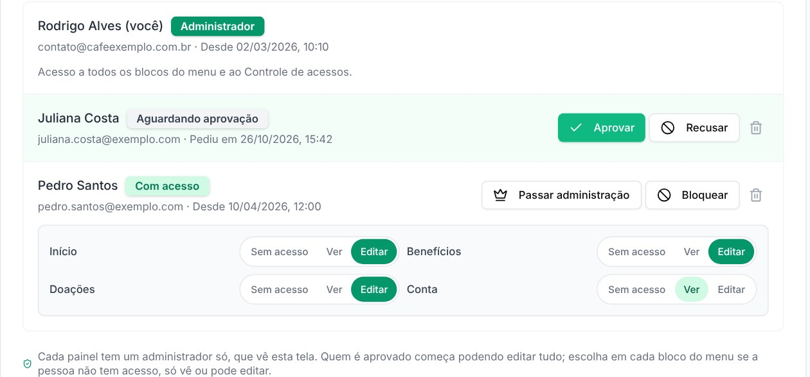
Um administrador por painel
- Cada painel tem um administrador só. Ele tem acesso a tudo e é o único que vê o Controle de acessos.
- Passar administração: quando a pessoa responsável muda, o administrador passa o papel para outra pessoa da equipe.
- Bloquear, liberar e excluir: bloquear tira o acesso na hora, e dá para liberar de novo depois. Excluir tira a pessoa da lista: se ela entrar pelo link outra vez, vira um pedido novo.
Alguém saiu da equipe? Bloqueie ou exclua o acesso da pessoa no mesmo dia.

Onde fica cada coisa
| Bloco | O que tem |
|---|---|
| Início | Visão geral: benefícios ativos, desbloqueios, usos na loja, clientes, pendências e desbloqueios por mês. |
| Benefícios | Meus benefícios (criar, editar, pausar e o scanner) e Clientes. |
| Doações | QR Codes de doação, quando uma ONG escolhe a loja para validar doações. |
| Conta | Informações da loja. |
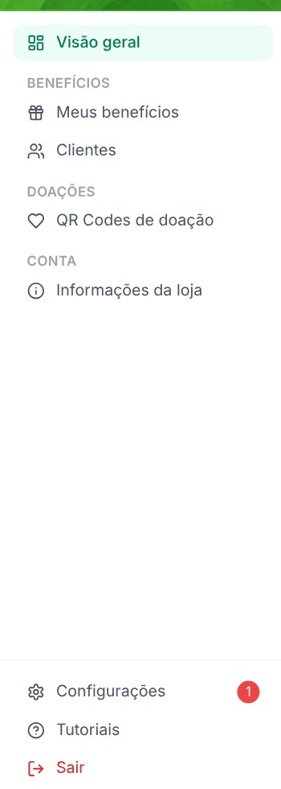
A Visão geral
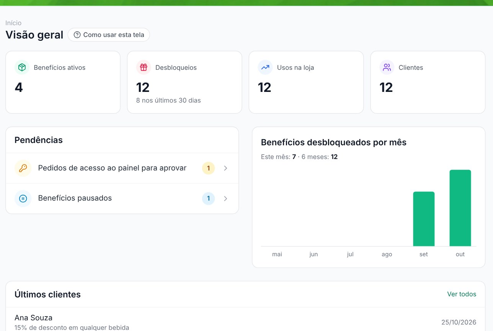
É a primeira tela do painel. Mostra os números da loja, as Pendências (pedidos de acesso, benefícios pausados ou vencidos), os desbloqueios por mês e os últimos clientes. No começo, mostra o que falta: completar as informações da loja, cadastrar o primeiro benefício e deixar um benefício no ar.
Idioma
Em Configurações › Idioma, cada pessoa escolhe ver o painel em português, inglês ou espanhol. Vale só para quem escolheu, em todos os aparelhos.
Ficou com dúvida em alguma tela? Clique em Como usar esta tela, ao lado do título. Os tutoriais completos ficam em Tutoriais, no rodapé do menu.

Como a loja aparece para quem doa
As informações da loja aparecem para os doadores junto com os seus benefícios. Uma loja bem apresentada, com logo, descrição e contato, faz o doador querer usar o benefício.
O que preencher
- Logo da loja: aparece nos cards de todos os seus benefícios. Use uma imagem quadrada, com fundo branco ou transparente.
- Sobre a loja: os seus produtos, diferenciais e propósito.
- Contato: e-mail, telefone, WhatsApp (com DDI e DDD, sem espaços, por exemplo 5511999999999), Instagram, endereço e site.
Use o lápis ao lado de cada parte para editar e clique em Salvar.
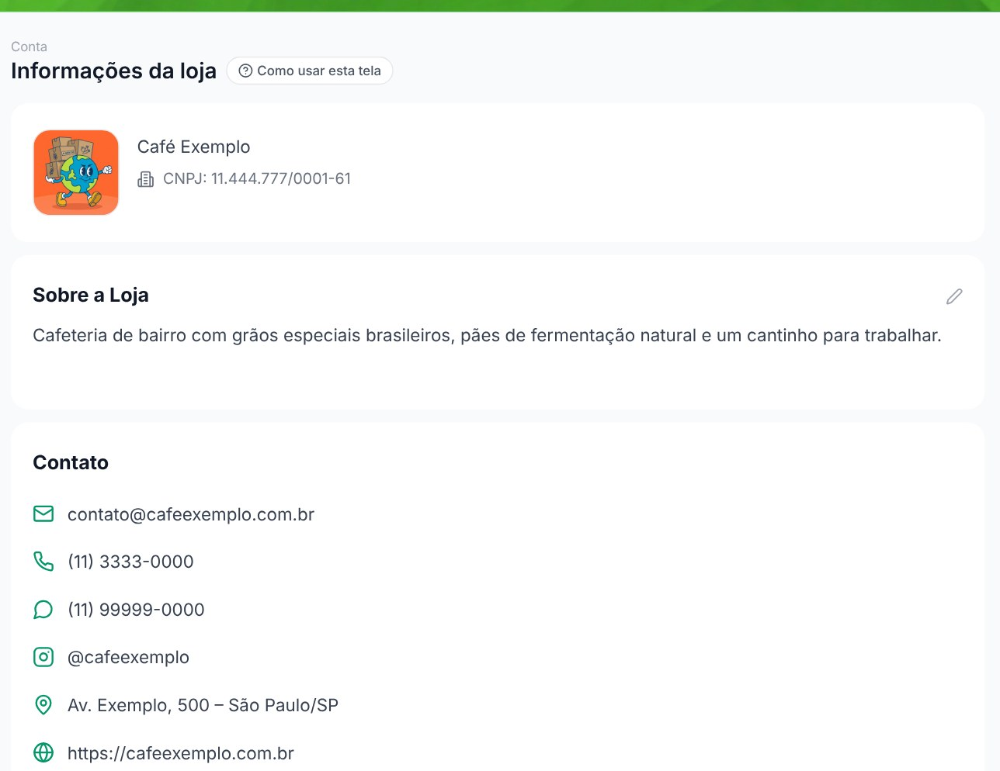
Capriche no logo. É a primeira coisa que o doador vê no benefício. Se você não enviar um, o app usa um ícone padrão.

Pontos, níveis e medalhas
Quem doa pela DuGood ganha pontos e conquistas. O seu benefício fica liberado para quem chegou a um nível ou ganhou uma medalha que você escolhe. Assim a loja recompensa quem faz o bem.
O caminho até a sua loja
- A pessoa doa para uma causa no app.Cada real doado vale um ponto.
- Ela sobe de nível ou ganha uma medalha.Os níveis vêm dos pontos; as medalhas, das doações em cada categoria de causa.
- O benefício da sua loja é desbloqueado.Ele aparece em Seus Benefícios, no app da pessoa.
- Ela usa o benefício.Na loja, pelo QR Code, ou com um cupom ou link (página 10).
Os níveis
| Nível | Pontos |
|---|---|
| Bronze | a partir de 5 |
| Prata | a partir de 100 |
| Ouro | a partir de 500 |
| Platina | a partir de 2.000 |
As medalhas
Cada categoria de causa (educação, saúde, animais, esportes…) tem a sua medalha, ganha quando a pessoa soma R$ 200 em doações naquela categoria.
Um benefício por medalha atrai quem apoia causas ligadas à sua loja: um pet shop pode liberar o desconto para quem tem a medalha de animais, por exemplo.
Quanto mais alto o nível, mais exclusivo. Um benefício de Bronze chega a quase todos que doam; um de Platina, só a quem já doou bastante. Você pode ter benefícios em níveis diferentes.

Um desconto ou brinde em poucos campos
Em Benefícios › Meus benefícios, clique em Novo Benefício. Depois de criado, o benefício já aparece para os doadores no app.
| Campo | O que colocar |
|---|---|
| Descrição | O que a pessoa ganha, de forma clara. Ex.: 15% de desconto em compras acima de R$ 100. |
| Valor do desconto | O destaque do card. Ex.: 15% ou R$ 20. |
| Limite de usos por usuário | Quantas vezes cada pessoa pode usar. |
| Válido até | A data em que o benefício deixa de valer. |
| Forma de resgate | QR Code, cupom ou link (página 10). |
| Tipo de desbloqueio | Por nível (Bronze, Prata, Ouro, Platina) ou por medalhas de categoria. |
| Logo e categoria | O logo da marca e a categoria do benefício. |
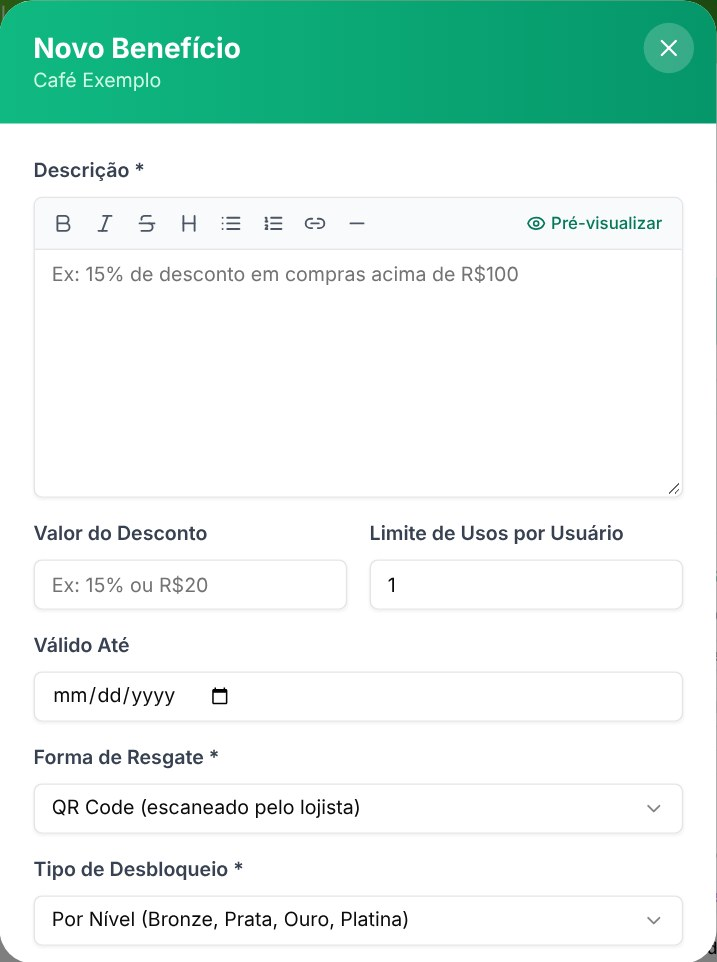
Escreva o benefício como você explicaria no balcão. Diga o que a pessoa ganha e as condições (valor mínimo, produtos, dias). Assim não há dúvida na hora de usar.
Só cadastre o que a loja consegue entregar. É o compromisso dos Termos de Parceria: se algo mudar, edite ou pause o benefício.
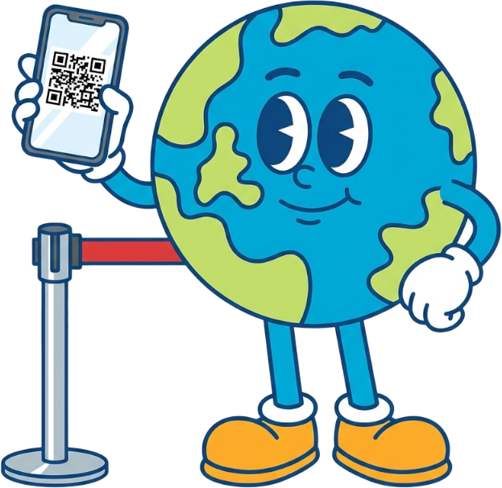
Na loja, por cupom ou pelo site
A forma de resgate diz como a pessoa usa o benefício. Escolha a que combina com a sua loja: atendimento no balcão, loja on-line ou as duas.
| Forma | Como funciona | Melhor para |
|---|---|---|
| QR Code | A pessoa mostra o QR Code do benefício no app, e a sua equipe lê com o scanner do painel (página 11). O uso fica registrado e conta no limite por pessoa. | Lojas físicas, restaurantes, cafés. |
| Cupom de desconto | Quando a pessoa desbloqueia, o app mostra o código do cupom (ex.: DUGOOD15), que ela usa na compra. | Lojas on-line com cupom. |
| Link de direcionamento | A pessoa é levada a um link do seu site (ex.: loja.com/dugood), onde o desconto é aplicado. | Sites com uma página própria para a parceria. |
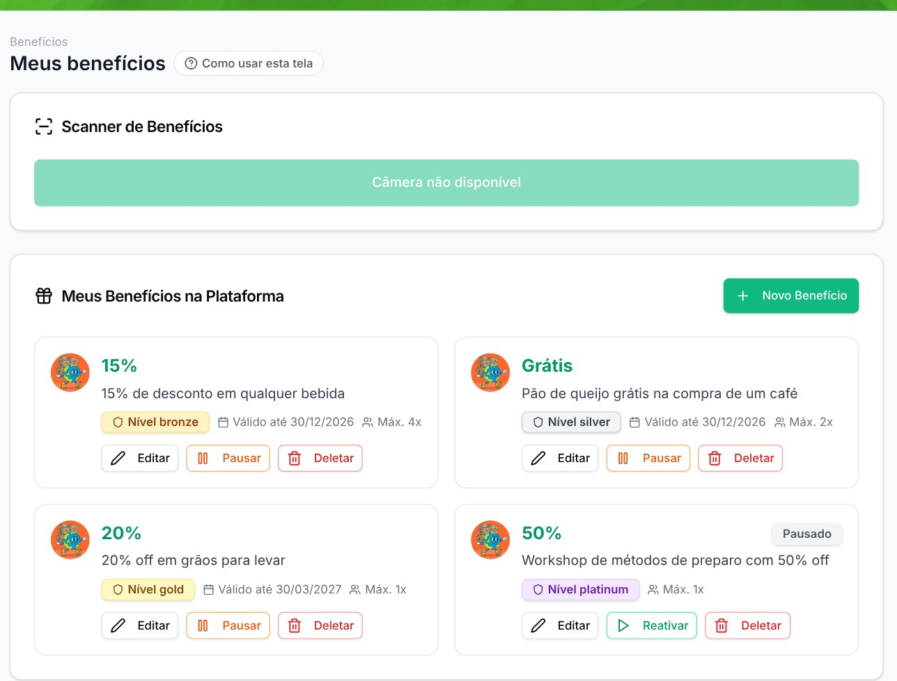
Cuidar dos benefícios
- Editar: muda qualquer campo do benefício.
- Pausar e Reativar: tira o benefício do ar por um tempo (por exemplo, numa reforma) e põe de volta depois.
- Deletar: apaga o benefício.
- Vencidos: depois da data de validade, a Visão geral avisa para renovar ou remover.

O cliente mostra o QR, você escaneia
Nos benefícios com QR Code, o cliente abre o benefício no app e mostra o QR Code na hora de pagar. A sua equipe lê pelo celular, confere e registra o uso. Assim ninguém usa o benefício mais vezes do que o combinado.
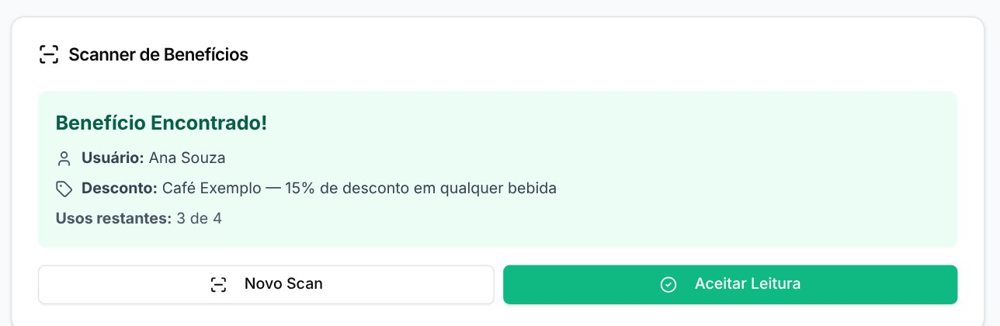
Passo a passo
- Abra o scanner no celular.Clique em Iniciar Scanner e permita o uso da câmera.
- Aponte para o QR Code do cliente.Aparecem quem é o cliente, o benefício e quantos usos ainda restam.
- Confira e clique em Aceitar Leitura.O uso fica registrado e entra em Clientes. Para ler outro, use Novo Scan.
- Aplique o desconto ou entregue o brinde.Do jeito descrito no benefício.
Deixe a câmera liberada. Abra o scanner uma vez no celular do caixa antes do primeiro atendimento, para o navegador já ter a permissão.
Quem passou pela loja
Cada benefício validado na loja traz o cliente para a sua lista. Você vê quem são, de onde vêm e quantas vezes voltaram: informação para o marketing e para a agenda ESG da loja.
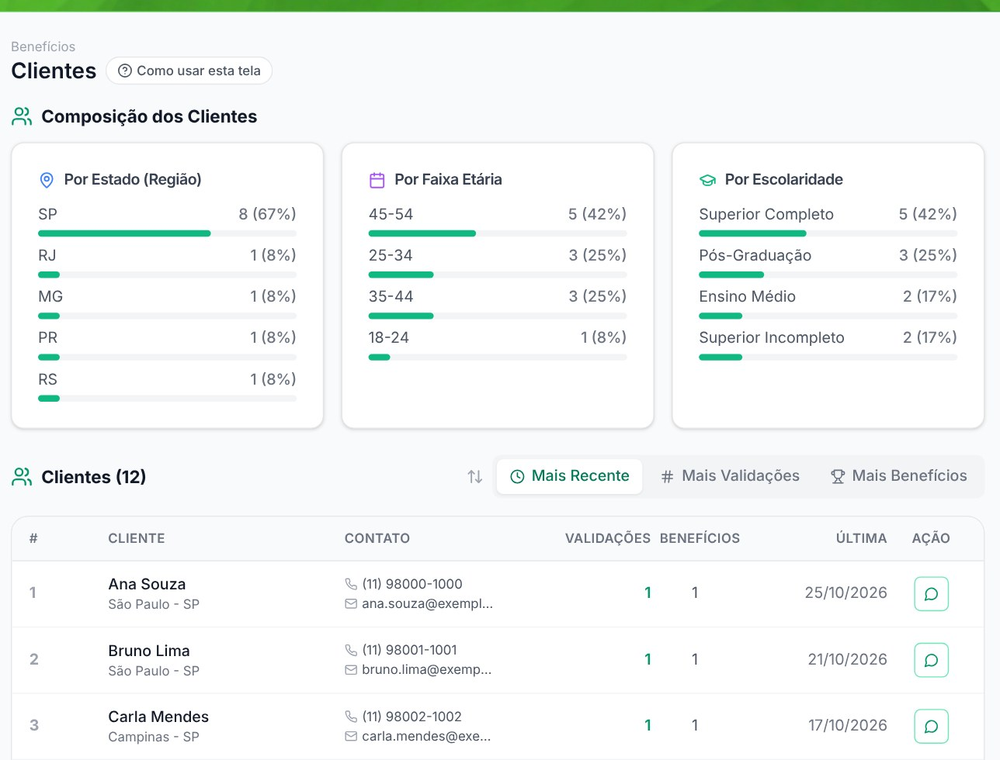
O que tem na tela
- Composição dos clientes: por estado (região), por faixa etária e por escolaridade.
- A lista: cada cliente com contato, número de validações, benefícios usados e a última visita. Ordene por mais recente, mais validações ou mais benefícios.
- Enviar WhatsApp: fala direto com o cliente, quando ele tem telefone cadastrado.
Use com cuidado. Os dados são de pessoas que usaram o benefício da sua loja. Use para se relacionar com elas, sem repassar para terceiros.

Quando a loja valida doações de uma ONG
Uma ONG pode escolher a sua loja como parceira para validar as doações de uma causa ou de um evento: por exemplo, quem doa retira na loja um kit ou um brinde. Nesses casos, quem doou recebe por e-mail um QR code, que a sua equipe lê no painel.
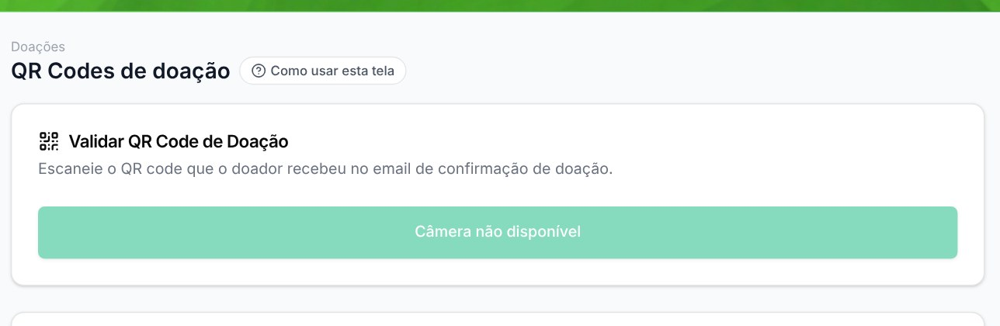
Passo a passo
- Clique em Iniciar Scanner.Na tela Validar QR Code de Doação.
- Leia o QR code que a pessoa recebeu por e-mail.Aparecem quem doou e o valor doado.
- Confirme.A doação fica validada e entra no Histórico de QR Codes de Doação, com os validados e os pendentes.
A tela está vazia? É normal: ela só tem algo quando uma ONG associa a sua loja a uma causa ou evento. A DuGood avisa quando isso for combinado.
Perguntas que sempre aparecem
A loja paga alguma coisa?
Não. Lojas parceiras não pagam nada para estar na DuGood, e o painel é grátis. A loja entrega só o benefício que ela escolheu.
O benefício precisa ser aprovado?
Não. Depois de criado, ele já aparece para os doadores no app. Você pode editar, pausar ou apagar quando quiser.
Quem pode usar o benefício?
Quem doa pela DuGood e chegou ao nível ou à medalha que você escolheu, até o limite de usos por pessoa e a data de validade.
O scanner não abre a câmera.
Permita o uso da câmera no navegador do celular e abra o scanner de novo. Use o celular que fica no caixa e teste antes do atendimento.
O cliente diz que tem o benefício, mas o QR não aparece.
O benefício precisa estar desbloqueado no app dele, ativo (não pausado) e dentro da validade, e ele não pode ter passado do limite de usos.
Alguém da equipe entrou, mas o painel não abre.
O pedido de acesso precisa ser aprovado pelo administrador em Configurações › Controle de acessos. Se a pessoa já aparece com acesso, confira os blocos dela.
O administrador saiu da loja.
Se ele ainda consegue entrar, use Passar administração para outra pessoa da equipe. Se não consegue, fale com a DuGood.
Posso usar o mesmo e-mail em dois painéis?
Não. Cada conta fica ligada a um painel só. Use outro e-mail para o outro painel.
Conte com a gente
Ficou alguma dúvida? Fale com a DuGood: comercial@dugood.com.br · WhatsApp (11) 99429-9400